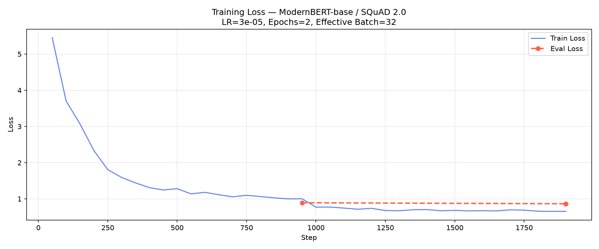
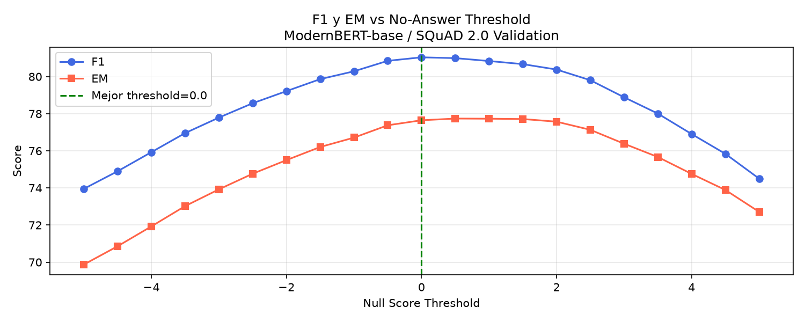

Pitch Oficial · NLP y APIs
Un encoder afinado en SQuAD 2.0 que responde con el fragmento exacto del texto, o se abstiene diciendo «no sé».
Integrantes del Equipo
Celeste Méndez · Fabiola Guardado · Eduardo Torruella · Arlette Catalán
Tag de Entrega: submission
Criterio 1 · Elección de Modelo y Justificación
| Modelo | EM Total | F1 Total | Sin Respuesta | Parámetros | Latencia en CPU |
|---|---|---|---|---|---|
| BERT-base-uncased | 67.8% | 70.2% | 75.0% | 108.9 M | ≈ 0.34 s |
| ModernBERT-base (Ganador) | 77.67% | 81.04% | 82.94% | 149.6 M | ≈ 1.3 s |
| RoBERTa-base | 74.93% | 78.31% | 76.79% | 124.1 M | ≈ 0.40 s |
| DistilBERT-base-uncased | 48.50% | 49.25% | 84.62%* | 66.4 M | ≈ 0.02 s |
Casi 11 puntos más de F1 que el baseline y 8 puntos más detectando preguntas sin respuesta (82.94% NoAns). Atención moderna con RoPE y GeGLU.
37% más parámetros y 1.3 s de latencia por pregunta en CPU, pero con margen holgado respecto al límite de 5.0 s por solicitud de la guía.
Extractive QA as a Service · Diapositiva 2 · Evaluado sobre 11,873 preguntas oficiales con evaluate.load('squad_v2')
Criterio 2 · Entrenamiento y Curva de Pérdida
| Decisión | Valor de Configuración |
|---|---|
| Datos de entrenamiento | 30,000 ejemplos (33.4% sin respuesta) |
| Conjunto de validación | 11,873 preguntas oficiales SQuAD 2.0 |
| Épocas y Learning Rate | 2 épocas · lr 3e-5 · warmup lineal 10% |
| Batch efectivo | 32 (4 per device × 8 acumulación) |
| Ventana y Stride | max_seq_length 384 · doc_stride 128 |
| Hardware de cómputo | RTX 3050 Ti (4GB) · fp16 · 2.85 horas |
Evidencia de convergencia: Train loss descendió a 1.21 y val loss convergió a 0.864 sin sobreajuste severo.

logs/loss.png — Trayectoria de pérdida de entrenamiento y validación
Extractive QA as a Service · Diapositiva 3
Criterio 2 · Calibración del Umbral
Regla de Decisión
null si: best_span ≤ min_k (s_0 + e_0) + τ
Donde s_0 y e_0 son los logits del token de clasificación CLS (posición 0).
Grid search en [-5.0, +5.0]. τ = 0.0 maximiza el balance F1 (81.04%) y Exact Match (77.67%), evitando abstenciones falsas o alucinaciones.

logs/threshold_search.png — Curvas de F1 y EM según el umbral τ
Extractive QA as a Service · Diapositiva 4
Criterio 3 · Arquitectura de Servicio y Flujo
Harness del evaluador llama a la URL pública.
Exposición HTTPS pública hacia localhost:8000.
Valida Bearer contra variable QA_API_TOKEN.
Ventanas 384 tokens con solapamiento de 128.
Inferencia en CPU, extracción de fragmento o null.
Se carga en memoria una sola vez al inicio en CPU. Mientras carga, /health responde 503 «loading»; al terminar, 200 «ok».
El token nunca se escribe en git. Se valida contra la variable de entorno QA_API_TOKEN. Sin token o incorrecto: 401. Solo /health es público.
El tokenizador garantiza context[start : start + len(answer)] == answer. Si no hay respuesta, devuelve null.
Extractive QA as a Service · Diapositiva 5
Criterio 4 · Investigación de Decoders (Sección XIII)
| Problema o Límite Encontrado | Cómo lo Resolvería un Decoder | Costo o Desventaja en Producción |
|---|---|---|
| Contextos largos: 3 ventanas deslizantes tardan 3.6 s con 3,200 letras. | Lee todo el contexto de una sola vez sin dividir en trozos. | Mayor consumo de RAM y latencia en CPU; pone en riesgo el límite de 5 s. |
| «Sin respuesta»: Depende de calibrar un umbral numérico τ. | Puede razonar y redactar que el texto no contiene el dato. | Respuesta libre: no calza con Exact Match y requiere evaluación con juez. |
| Respuestas no literales: Preguntas de Sí/No o síntesis abstractiva. | Genera la respuesta libremente aunque no esté literal en el texto. | Modelo mucho más pesado; abre la puerta al riesgo de alucinación. |
Conclusión de Ingeniería: Para respuestas literales y servicio exclusivo en CPU con límite estricto de 5 s, un Encoder (ModernBERT) es la solución más rápida, determinista y fácil de evaluar.
Extractive QA as a Service · Diapositiva 6
Validación en Vivo (Sección XI) & Cierre
| Prueba del Dry Run (Túnel Cloudflare) | Resultado Oficial |
|---|---|
| GET /health, sin token | 200 · {'status': 'ok'} |
| GET /info, sin token | 401 · Unauthorized |
| GET /info, token incorrecto | 401 · Unauthorized |
| GET /info, token válido | 200 · team-03, 149.6M |
Prueba Real · POST /predict
question: How long is the Lempa River?
answer: 422 km
start: 67 · score: 0.9887
Pregunta trampa: answer: null, start: null (score 0.999)
¡Gracias! · ¿Preguntas?
team-03 · Celeste · Fabiola · Eduardo · Arlette Catalán